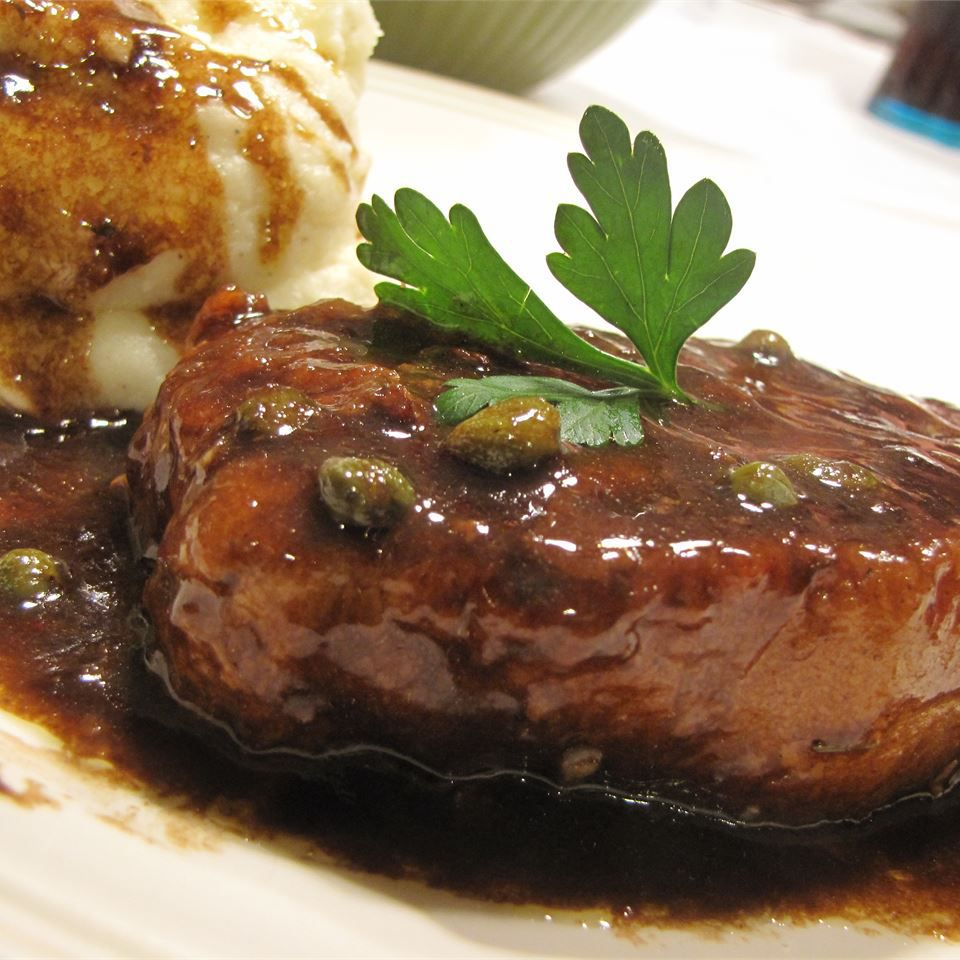

Pork Medallions with Balsamic Vinegar and Capers

Description
This is one meal to impress dinner guests that will not break the bank nor will it take very much time! Served with a green salad, red potatoes, and asparagus, this meal will turn out with a memorable presentation!
Ingredients
- All purpose flour
- Garlic salt and pepper
- Balsamic vinegar
- Pork tenderloin
- Olive oil
- Chicken broth
- Lemon zest
- Capers
Steps
- Place the flour, garlic salt, and pepper into a plastic bag. Shake to mix, the add the pork tenderloin pieces, and shake again to coat. Shake off the excess flour.
- Heat the oil in a large skillet over medium-high heat. Cook the pork medallions in the hot oil until golden-brown on both sides, 2 to 3 minutes per side. Pour in the balsamic vinegar and chicken broth. Bring to a boil, then reduce heat to medium, and simmer until the pork is no longer pink in the center, 3 to 4 minutes. Remove the pork to a serving platter, then stir the lemon zest and capers into the simmering sauce. Continue simmering until the sauce has thickened to your desired consistency.